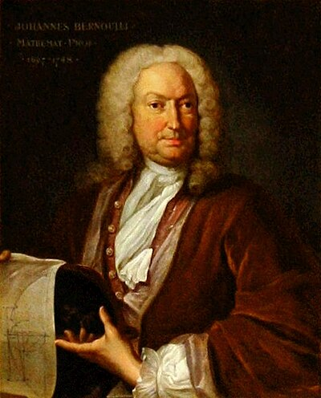

1667–1748
Swiss
Calculus, differential equations, mechanics
Johann Bernoulli was the most combative mathematician of his era, and possibly of all time. The younger brother of Jacob, he was trained in medicine but fell in love with the new Leibnizian calculus, which he mastered with extraordinary speed. He became professor of mathematics at Groningen and later succeeded his brother at Basel.
Johann's most famous contribution is, ironically, attributed to someone else. In 1694 he discovered the rule for evaluating limits of indeterminate forms $0/0$ — what we now call L'Hôpital's rule. He communicated the result to the Marquis de L'Hôpital, who published it in 1696 in the first calculus textbook ever printed. L'Hôpital had a contract with Bernoulli: a regular salary in exchange for exclusive rights to Bernoulli's mathematical discoveries. The attribution stuck, to Johann's lasting irritation.
In 1696, Johann posed the brachistochrone problem as a public challenge: find the curve along which a bead slides from one point to another in the shortest time under gravity. The answer — a cycloid — was found by Johann himself, his brother Jacob, Newton, Leibniz, and L'Hôpital. This problem launched the calculus of variations, an entire branch of mathematics concerned with optimising functionals.
Johann also introduced the Bernoulli differential equation $y' + P(x)y = Q(x)y^n$, which can be reduced to a linear equation by a clever substitution. His teaching was enormously influential: Euler, the greatest mathematician of the next generation, was Johann's student. Johann's rivalry with his brother Jacob was bitter, and his jealousy of his own son Daniel was worse — he once attempted to claim Daniel's Hydrodynamica as his own work.
| Phase | Page | Referenced for |
|---|---|---|
| Phase 3 | L'Hôpital's Rule | Discovered the rule (c. 1694), published under L'Hôpital's name |
| Phase 3 | Integration Techniques | Bernoulli family developed integration techniques |
| Phase 8 | First-Order ODEs | Bernoulli equations: $y' + Py = Qy^n$ |
| Phase 8 | First-Order ODEs | Brachistochrone problem (1696), launching calculus of variations |